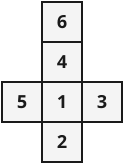
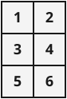

Netze von Quader und Würfel
Mit einem KI-Tutor lernen
Ein KI-Tutor erklärt dir diese Seite und hilft dir bei den Aufgaben. Wähl deinen Assistenten:
Mit Claude öffnen Mit ChatGPT öffnen Mit Mistral Vibe öffnen
Du nutzt dein eigenes Konto beim Anbieter. Der Assistent ist kein Angebot von lernapps.net: lernapps liefert nur Inhalte und Aufgaben. Die Wahl gilt für alle Seiten, nur auf diesem Gerät.
Eine Schachtel aufschneiden
Wenn du aus Pappe eine Schachtel bauen willst, brauchst du ein Netz. Schneidest du eine Schachtel an den Kanten auf und legst sie flach hin, hast du ein Netz. Auf dieser Seite lernst du, ein Netz im Kopf zu falten und zu prüfen, ob daraus ein Würfel wird. Schiebe den Regler nach links: Der Würfel klappt auf. Mit den Knöpfen drehst du ihn und siehst auch seine Unterseite.
Der Körper steht schon in der Ausgangsstellung.
Ein Würfel, der sich aufklappen lässt. Geschlossen hat er sechs Quadrate: Boden (1), vorn (2), rechts (3), hinten (4), links (5) und Deckel (6). Aufgeklappt liegen alle sechs flach: Der Boden liegt in der Mitte, vorn, rechts, hinten und links hängen an seinen Kanten, der Deckel hängt am hinteren Quadrat.
Aufgabe
Lösung
Vier
Vier Quadrate wären nur der Mantel um den Würfel. Boden und Deckel fehlen dann.
Sechs richtige Antwort
Ein Würfel hat sechs gleich große Quadrate als Flächen. Beim Aufklappen verschwindet keine.
Acht
Ein Würfel hat acht Ecken, aber nur sechs Flächen. Zähle Flächen, nicht Ecken.
Aufklappen ändert die Flächen nicht. Aus den sechs Quadraten des Würfels wird ein flaches Bild mit sechs Quadraten.
Was ein Netz ist
Wenn du prüfen willst, ob sich ein Netz zum Würfel faltet, achtest du darauf, welche Flächen aneinanderhängen.
- Netz
Ein Netz zeigt alle Flächen eines Körpers flach in einem Stück. Die Flächen hängen an Kanten zusammen.
- Mantel
Der Mantel sind die Flächen, die rund um den Körper zwischen Boden und Deckel stehen. Beim Würfel sind es die vier Seiten.
Nicht jede Anordnung von sechs Quadraten ist ein Würfelnetz. Beim Falten bekommt jedes Quadrat eine eigene Seite des Würfels. Würden zwei Quadrate dieselbe Seite bekommen, bliebe eine andere leer: Das Netz geht nicht. Vier Quadrate in einer Reihe bilden den Mantel. Boden und Deckel müssen dann eines auf jeder Seite der Reihe hängen. Ein Quader hat auch sechs Flächen, aber Rechtecke: Je zwei gegenüberliegende Flächen sind gleich. Gegenüber liegen zwei Flächen des Würfels, wenn sie im Netz in einer geraden Reihe mit genau einem Quadrat dazwischen liegen. In den Aufgaben siehst du ein Netz aus nummerierten Quadraten. Du entscheidest, ob es sich zum Würfel faltet, oder welche Fläche gegenüber einer anderen liegt. Sonst lege im Kopf die gesuchte Fläche als Boden und klappe die anderen nach oben: Die Fläche, die oben als Deckel ankommt, liegt gegenüber.

© CC-BY-4.0Das Netz des Würfels von oben, wenn der Regler ganz links steht. Beim Falten dieses Netzes liegen 1 und 6, 2 und 4 sowie 3 und 5 gegenüber.

© CC-BY-4.0Kein Würfelnetz. Die Quadrate 1, 2, 3 und 4 stoßen an einer Ecke zusammen, aber an der Ecke eines Würfels treffen sich nur drei Flächen.
Im Kopf falten
Im Netz mit den Zahlen 1 bis 6 (erstes Bild) bilden die vier Quadrate 6, 4, 1 und 2 in der Reihe den Mantel. Quadrat 5 und Quadrat 3 hängen links und rechts an Quadrat 1. Sie klappen nach oben und unten und werden Boden und Deckel. Jedes Quadrat hat jetzt eine eigene Seite, das Netz geht.
Übung
Aufgabe Nr. 1
Aufgabe Nr. 1
Du faltest das Netz im Kopf. Wird daraus ein Würfel? Das Netz in Worten, 3 Spalten: Reihe 1: Quadrat 1 (Spalte 2); Reihe 2: Quadrat 2 (Spalte 2), 3 (Spalte 3); Reihe 3: Quadrat 4 (Spalte 1), 5 (Spalte 2); Reihe 4: Quadrat 6 (Spalte 1).
Lösung
ja, faltbar
Aufgabe
Lösung
Richtige Antwort: Die Aussage stimmt nicht.
Die vier Quadrate in der Reihe bilden den Mantel des Würfels. Die beiden anderen müssen Deckel und Boden werden, also eines oberhalb und eines unterhalb der Reihe hängen. Hängen beide oben, landen sie auf derselben Seite.
Aufgabe Nr. 1
Aufgabe Nr. 1
Du faltest das Netz zu einem Würfel. Welche Fläche liegt gegenüber von Fläche 5? Das Netz in Worten, 3 Spalten: Reihe 1: Quadrat 1 (Spalte 2); Reihe 2: Quadrat 2 (Spalte 2), 3 (Spalte 3); Reihe 3: Quadrat 4 (Spalte 1), 5 (Spalte 2); Reihe 4: Quadrat 6 (Spalte 1).
Lösung
Fläche 1
Aufgabe
Drei Beispielaufgaben, jede mit ihrer Lösung:
Aufgabe Nr. 1
Ein Quader ist 4 cm lang, 7 cm breit und 13 cm hoch. Eine Fläche des Quaders hat die Maße 4 cm mal 7 cm. Wie viele Flächen des Quaders haben genau diese Maße?
Tipp
Welche Fläche liegt im Quader gegenüber? Sie sieht genau so aus.
Lösung
- Gegenüberliegende Flächen des Quaders sind gleich groß, und hier sind alle drei Maße verschieden: Es sind 2 Flächen mit diesen Maßen.
Richtige Antwort: 2
Aufgabe Nr. 2
Ein Quader ist 6 cm lang, 7 cm breit und 14 cm hoch. Eine Fläche des Quaders hat die Maße 6 cm mal 7 cm. Wie viele Flächen des Quaders haben genau diese Maße?
Tipp
Welche Fläche liegt im Quader gegenüber? Sie sieht genau so aus.
Lösung
- Gegenüberliegende Flächen des Quaders sind gleich groß, und hier sind alle drei Maße verschieden: Es sind 2 Flächen mit diesen Maßen.
Richtige Antwort: 2
Aufgabe Nr. 3
Ein Quader ist 4 cm lang, 10 cm breit und 13 cm hoch. Eine Fläche des Quaders hat die Maße 4 cm mal 10 cm. Wie viele Flächen des Quaders haben genau diese Maße?
Tipp
Welche Fläche liegt im Quader gegenüber? Sie sieht genau so aus.
Lösung
- Gegenüberliegende Flächen des Quaders sind gleich groß, und hier sind alle drei Maße verschieden: Es sind 2 Flächen mit diesen Maßen.
Richtige Antwort: 2
Fehler gefunden oder eine Idee für diese App?